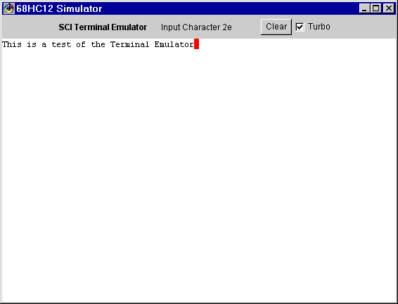

The 68HC12 Simulator simulates one SCI port, SCI0. To maximize its usefulness, it is assume connected to a terminal emulator.
The terminal emulator will display printable ASCII characters, and responds to the linefeed ($0a) character (by moving the cursor down), carriage return ($0d, moving the cursor to the left margin), bell ($07), and backspace ($08) character (backs up the cursor). It will also erase the screen with a $1a character, or by pressing the "clear" button. When the terminal has been selected for input, the cursor will appear in red.
The keyboard input only supports ASCII characters, not the function keys, arrow keys, Insert/Delete, et cetera.
The "Turbo" check box makes the serial port run at about 80 megabits per second, which is convenient for simulations since they will run faster. With turbo turned off, communications run at the configured rate. The "Binary Display" check box will cause the binary values of the characters to be displayed rather than the characters themselves. This can be useful for debugging strange output.

When an input character code is displayed as in the figure above, it has yet to be transmitted. You probably won't see one displayed unless you are stepping through a program rather than just running it with "Go".
It is important not to type input faster than it can be received. If the program being simulated echoes characters, wait until a character is echoed before typing an additional character. Otherwise, only type characters when no input character is indicated.